Somos
Una red autosustentable de atletas no comerciales, una plataforma independiente de apoyo, un espacio comunitario de difusión. Sobre todo, somos una manada de perros callejeros que no saben estarse quietos.
Misión
Queremos ver más atletas haciendo deportes no comerciales —escalada, surf, skate, ciclismo y más— en México. Junto a la comunidad, creamos este espacio de difusión desde donde visibilizar el progreso, circulando equipo de video, interviniendo el contenido audiovisual e involucrándonos en la protección de los espacios naturales que permiten nuestras pasiones.
Visión
Buscamos convertirnos en un espacio comunitario donde todos los atletas encuentren un albergue para expandir su práctica. Además, queremos inspirar a otras comunidades de deportes alternativos en Latinoamérica a impulsar el talento local.
No negociables
Try Hard
Apoyamos a todos los atletas sin importar el nivel o la dificultad de sus proyectos. Valoramos el continúo esfuerzo y las ganas de seguir aprendiendo.
El crag es primero
Fomentamos el cuidado de las zonas donde practicamos deportes, visibilizándolas y protegiéndolas. Además, promovemos una producción responsable a través de colecciones limitadas y prácticas como el upcycling, minimizando el impacto ambiental en cada paso.
Muerte al influencer
Priorizamos el crecimiento real del deporte sobre el performance digital. No nos guíamos por el número de likes ni seguidores, nos interesan los atletas que están realmente involucrados en el deporte.
Aprieta y aguanta
Celebramos el esfuerzo, la capacidad de adaptación y la persistencia frente a cualquier adversidad. Reconocemos el contexto en el que los atletas de Latinoamérica se desarrollan y valoramos el esfuerzo por practicar un deporte a pesar de las dificultades.
Cómo le hacemos
Este proyecto se hace desde y para la comunidad, con recursos propios y la pasión por seguir creciendo en nuestro deporte. A través de la producción responsable de ropa con colecciones limitadas y prácticas como el upcycling, financiamos y sustentamos la realización multimedia de los proyectos.
